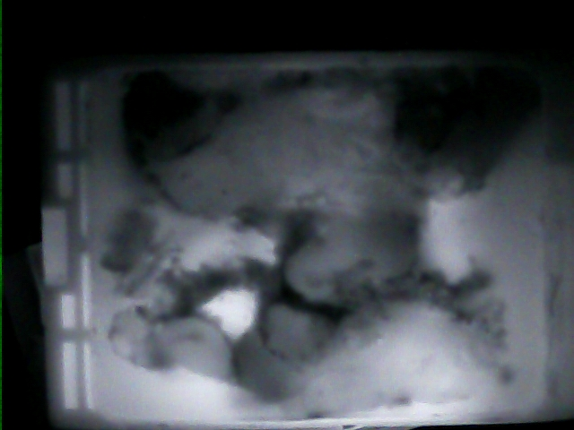
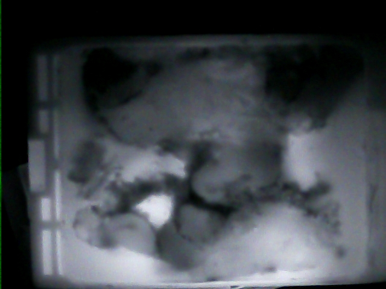სსიპ შოთა რუსთაველის ეროვნული სამეცნიერო ფონდის
კვლევითი საგრანტო პროექტის პროგრამული ანგარიში
1 - თავფურცელი / ზოგადი ინფორმაცია
|
1 |
საგრანტო ხელშეკრულება № |
FR-22-195 |
|
2 |
საანგარიშო პერიოდი № |
|
|
3 |
ანგარიშის ტიპი
|
საბოლოო |
|
4 |
ანგარიშის პერიოდულობა (ექვსთვიანი / წლიური / სხვ.) |
წლიური |
|
5 |
საგრანტო პროექტის სახელწოდება: |
ინფრაწითელი ვიზუალიზაციის ახალი მეთოდის დამუშავება რადიკალური პროსტატექტომიისა და ნაწილობრივი ნეფრექტომიის შემდეგ კიბოს რეციდივის თავიდან ასაცილებლად. |
|
6 |
კონკურსი, რომლის ფარგლებშიც დაფინანსდა პროექტი: (კონკურსის სახელწოდება, წელი) |
ფუნდამენტური კვლევებისთვის სახელმწიფო სამეცნიერო გრანტების კონკურსი |
|
7 |
სამეცნიერო მიმართულება: ქვე-მიმართულება: (მიუთითეთ სიტყვიერად და კოდი კლასიფიკატორიდან): |
სიცოცხლის შემსწავლელი მეცნიერებები. (კოდი 2) ადამიანის დაავადბების პრევენცია, დიაგნოზი და მკურნალობა. (კოდი 2.7) |
|
8 |
გრანტის მიმღები წამყვანი ორგანიზაცია
|
211349192 |
|
9 |
გრანტის მიმღები წამყვანი ორგანიზაციის ხელმძღვანელი/პასუხისმგებელი პირი: (სახელი, გვარი, თანამდებობა ტელ. ელ. ფოსტა) |
დავით გურგენიძე, რექტორი, ტელ 593 966 792 science@gtu.ge |
|
10 |
საგრანტო პროექტის სამეცნიერო ხელმძღვანელი: (სახელი, გვარი, ტელ. ელ. ფოსტა) |
ბესარიონ ფარცვანია, 599 50 55 63, besarion.partsvania@gtu,ge |
|
11 |
საგრანტო პროექტის ბუღალტერი: (სახელი, გვარი, ტელ. ელ. ფოსტა) |
ეკა მანდარია 551 84 01 09 @gtu.ge |
|
10 |
პროექტის ხანგრძლივობა (თვეების რაოდენობა):
|
27.02.2023 27.02.2026 |
სამეცნიერო პროექტის მიზნები, ამოცანები და მიღწეული შედეგები (მოცემულ გრაფაში მიუთითეთ განხორციელებული სამეცნიერო პროექტის მიზნები, ამოცანები და პროექტის განხორციელების შედეგები. მოკლე ანგარიშის მოცულობა: რეკომენდირებული-400 სიტყვა, არაუმეტეს 800 სიტყვისა)
მიუთითეთ პროექტის განხორციელების შედეგად მიღებული პროდუქტები ქვემოთ მოყვანილი ჩამონათვალიდან:
|
№ |
ავტორ(ებ)ი |
სტატიის სათაური |
ჟურნალის სათაური |
ტომი/ გამოცემა |
გამოცემის თარიღი |
გამომცემლობა |
ადგილობრივი/საერთაშორისო (მიუთითეთ ერთ-ერთი) |
სტატიის სტატუსი: გამოცემული, მიღებული, ელოდება გამოცემას, განხილვის პროცესში მყოფი, წარდგენილი, სხვ. (მიუთითეთ ერთ-ერთი) |
ინტერნეტ-ბმული |
|
1 |
ბესარიონ ფარცვანია, თამაზ სულაბერიძე, ალექსანდრე ხუსკივაძე, სოფიო აბაბზაძე, თეიმურაზ გოგოლაძე. |
Differentiating Malignant and Healthy Areas in Isolated Kidney Samples through Infrared Visualization Techniques |
Wordl Journal of Oncology |
16 (3):3 |
2025 |
ELMER PRESS |
საერთაშორისო |
გამოცემული |
https://pubmed.ncbi.nlm.nih.gov/40556969/ |
|
2 |
ბესარიონ ფარცვანია, თამაზ სულაბერიძე, ალექსანდრე ხუსკივაძე, სოფიო აბაბზაძე, თეიმურაზ გოგოლაძე. |
Utilizing Infrared Imaging to Evaluate the Aggressiveness of Prostate Cancer |
Experimental Oncology |
47(3) |
2025 |
Morion LLC |
საერთაშორისო |
გამოცემული |
ISSN 1812-9269. Experimental Oncology 47 (3). 2025 |
|
3 |
ბესარიონ ფარცვანია, თამაზ სულაბერიძე, ალექსანდრე ხუსკივაძე, სოფიო აბაბზაძე, |
Prostate Cancer Diagnostics Modelling Using the Infrared Imaging Method |
Experimental Oncology |
43 (3) |
2024 |
Morion LLC |
საერთაშორისო |
გამოცემული |
https://exp-oncology.com.ua/index.php/Exp/article/view/417 |
წიგნები, მონოგრაფიები, დისერტაცია/ნაშრომები, თეზისები, ან მსგავსი გამოცემები, რომლებიც გამოქვეყნებული იყო პროექტის შედეგად ცალკე გამოცემის სახით.
|
№ |
ავტო-რ(-ებ)ი |
პუბლიკაციის სათაური |
ტომი/ გამო-ცემა |
გამოცემის თარიღი |
გამომცემლობა |
ადგილობრივი/საერთაშორისო (მიუთითეთ ერთ-ერთი) |
გამოცემის სტატუსი (გამოცემული/მიღებული) |
გვერდების რაოდენობა |
ინტერნეტ-ბმული |
|
1 |
|||||||||
|
2 |
|||||||||
|
3 |
|
№ |
ავტორ-(ებ)ი |
ნაშრომის სათაური |
ღონისძიების დასახელება |
გამოცე-მის თარიღი |
გამომცემლობა |
ადგილობრივი/საერთაშორისო (მიუთითეთ ერთ-ერთი) |
გამოცემის სტატუსი (გამოცემული/მიღებული) |
ინტერნეტ-ბმული |
|
1 |
ბესარიონ ფარცვანია, თამაზ სულაბერიძე, ალექსანდრე ხუსკივაძე, სოფიო აბაბზაძე, |
P17 Alternative optical techniques for assessing the aggressiveness of prostate cancer |
10th Baltic Meeting in conjunction with the EAU (Baltic Urology Congress – BUC) 2025 |
2025 |
Elsevier |
საერთაშორისო |
გამოცემული |
https://www.researchgate.net/publication/393244357_P17_Alternative_optical_techniques_for_assessing_the_aggressiveness_of_prostate_cancer |
|
2 |
||||||||
|
3 |
|
№ |
ღონისძიების ჩატარების ადგილი |
ღონისძიების ჩატარების თარიღი |
ღონისძიების ტიპი |
ღონისძიების სტატუსი |
თემის სახელწოდება |
წარდგენილი მასალა (თეზისი, მოხსენება/პრეზენტაცია, პუბლიკაცია) |
მონაწილის სტატუსი |
|
1 |
ამსტერდამი, ნიდერლანდები |
1-3 მაისი 2025 |
საერთაშორისო სიმპოზიუმი |
მონაწილე |
Identifying Cancerous and Non-Cancerous Areas in Isolated Kidney Samples via Infrared Visualization |
პრეზენტაცია |
პოსტერის პრეზენტატორი |
|
2 |
|||||||
|
3 |
მიუთითეთ URL მისამართი, რომლის მეშვეობითაც ხდება კვლევის შედეგების დისემინაცია. თან დაურთეთ თითოეული საიტის მოკლე აღწერა და შესაბამისი პუბლიკაციების სათაურები ბმულებით.
აღწერეთ ტექნოლოგიები, ტექნიკა/მეთოდოლოგია/პროცედურა/დანადგარი, რაც მიიღეთ კვლევის შედეგად. აღწერეთ მათი გაზიარების, გავრცელების სტრატეგია
ჩამოთვალეთ კვლევის შედეგად მიღებული საავტორო უფლებები, მიუთითეთ საავტორო უფლების მიმნიჭებელი ორგანიზაცია, სტატუსი, თარიღი, ვადა, გამოყენების სფერო
ჩამოთვალეთ კვლევითი პროექტის განხორციელების შედეგად მიღებული სხვა პროდუქტები, როგორიცაა:
|
1 |
პროექტის ფარგლებში მიღებული მნიშვნელოვანი დასკვნა |
პროექტის ფარგლებში დადგინდა, რომ ინფრაწითელი (IR) ვიზუალიზაციის გამოყენებით შესაძლებელია პოსტოპერაციულად ამოღებული ადამიანის ორგანოს (პროსტატისა/თირკმლის) მთელი ქსოვილის ერთიანი, არაინვაზიური შეფასება, რაც უზრუნველყოფს სხვადასხვა ჰისტომორფოლოგიური და აგრესიულობის მქონე უბნების წინასწარ იდენტიფიკაციას. |
|
2 |
პროექტის მნიშვნელობა სამეცნიერო საზოგადოებისათვის |
პროექტმა ხელი შეუწყო ინფრაწითელი (IR) ვიზუალიზაციის გამოყენების მეცნიერულ დასაბუთებას, როგორც პოსტოპერაციულად ამოღებული ადამიანის ორგანოს ქსოვილის მთლიანი მოცულობის სწრაფი და არაინვაზიური შეფასების ალტერნატიული მიდგომის. |
|
3 |
პროექტის ფარგლებში ადგილობრივი ან/და საერთაშორისო თანამშრომლობის ხარისხი (ახალი კვლევითი ჯგუფების ჩამოყალიბება, არსებული ჯგუფების კონსოლოდაცია) |
პროექტის განხორციელების პროცესში მოხდა ადგილობრივი ინტერდისციპლინური თანამშრომლობის კონსოლიდაცია საქართველოს ტექნიკური უნივერსიტეტის ბიოკიბერნეტიკის დეპარტამენტსა და კლინიკურ პარტნიორებს შორის, რაც უზრუნველყოფდა ექსპერიმენტული კვლევების, ვიზუალიზაციისა და ჰისტოპათოლოგიური ანალიზის ინტეგრაციას. |
|
4 |
გრანტის მიმღები წამყვანი ორგანიზაციის მხარდაჭერის ხარისხის შეფასება პროექტის განხორციელებისას (მაგ. შესყიდვების დროულად განხორციელება) |
პროექტის განხორციელების პროცესში გრანტის მიმღებმა წამყვანმა ორგანიზაციამ უზრუნველყო ადმინისტრაციული და ორგანიზაციული მხარდაჭერა, რაც გამოიხატა ფინანსური და შესყიდვითი პროცედურების დროულად განხორციელებაში, საჭირო დოკუმენტაციის მართვასა და პროექტის საქმიანობების შეუფერხებელ შესრულებაში. |
|
5 |
რეკომენდაციები ფონდისათვის კონკურსის ადმინისტრირებისა და მონიტორინგის კუთხით |
პროექტის ადმინისტრირებისა და მონიტორინგის არსებული მექანიზმები უზრუნველყოფდა კვლევითი საქმიანობის ეფექტიან განხორციელებას. რეკომენდებულია აღნიშნული პრაქტიკის შენარჩუნება და, შესაძლებლობის ფარგლებში, ანგარიშგებისა და კომუნიკაციის ციფრული ინსტრუმენტების შემდგომი განვითარება, რაც კიდევ უფრო გაამარტივებს გრანტმიმღებთა და ფონდის თანამშრომლობას. |
|
6 |
პროექტის ფარგლებში მიღებული აკადემიური შედეგი (ასეთის არსებობის შემთხვევაში), მაგ. პროექტის ფარგლებში მაგისტრის ან დოქტორის აკადემიური ხარისხის დაცვა |
არა |
|
7 |
რამდენმა ადამიანმა დაიწყო დოქტორანტურაში სწავლა პროექტის ფარგლებში? |
არა |
|
8 |
პროექტის განხორციელებისას გამოყენებული ახალი და არასტანდარტული მეთოდოლოგია |
პროექტის ფარგლებში გამოყენებულ იქნა არასტანდარტული მეთოდოლოგიური მიდგომა, რომელიც ეფუძნება პოსტოპერაციულად ამოღებული ადამიანის ორგანოს (პროსტატისა/თირკმლის) მთლიანი მოცულობის ინფრაწითელი (IR) ვიზუალიზაციას ex vivo პირობებში. განსხვავებით ტრადიციული ჰისტომორფოლოგიური პრაქტიკისგან, რომელიც ეფუძნება ქსოვილის ფრაგმენტულ შერჩევას, შემოთავაზებული მეთოდოლოგია უზრუნველყოფს ორგანოს სრული ზედაპირისა და მოცულობის ერთიან, არაინვაზიურ სკრინინგს. |
|
9 |
ინტერ და კროსდისციპლინარული განვითარება |
პროექტის განხორციელებამ ხელი შეუწყო ინტერ და კროსდისციპლინარული თანამშრომლობის გაღრმავებას ფიზიკის, ბიოინჟინერიის, მედიცინისა და პათოლოგიური ანალიზის მიმართულებებს შორის. ინფრაწითელი ვიზუალიზაციის ფიზიკური პრინციპები ინტეგრირდა ჰისტოპათოლოგიურ შეფასებასთან და კლინიკურ კონტექსტთან, რამაც შექმნა ერთიანი კვლევითი ჩარჩო პოსტოპერაციული ორგანოების შეფასებისთვის. |
|
10 |
ცოდნისა და ტექნოლოგიის ტრანსფერი (მიუთითეთ შედეგების ტრანსფერი სამთავრობო ინსტიტუტებთან, საწარმოებთან მიმართებაში, ახლი პრაქტიკა/პრცედურები, სადაც კვლევამ ინიცირება მოახდინა ე.წ. Start-up-ების გაშვებაზე) |
პროექტის ფარგლებში შემუშავებული ინფრაწითელი (IR) ვიზუალიზაციის მეთოდოლოგია წარმოადგენს ცოდნის ტრანსფერის საფუძველს აკადემიურ და კლინიკურ გარემოს შორის. მიღებული შედეგები გაზიარებულ იქნა სამედიცინო და კვლევით ინსტიტუციებთან სამეცნიერო შეხვედრებისა და კონფერენციების ფარგლებში, რაც ხელს უწყობს აღნიშნული მიდგომის ინტეგრაციას პათოლოგიურ და ტრანსლაციურ კვლევით პრაქტიკაში. |
|
11 |
სამეცნიერო გარემოს მყისიერი გაძლიერება |
პროექტის განხორციელების შედეგად მოხდა სამთავრობო სამეცნიერო გარემოში ახალი კვლევითი მიდგომების მყისიერი ინტეგრაცია, კერძოდ, ინფრაწითელი (IR) ვიზუალიზაციის არაინვაზიური მეთოდოლოგიის დანერგვა პოსტოპერაციული ორგანოების ex vivo შეფასებისათვის. |
აღწერეთ მნიშვნელოვანი წვლილი, ძირითადი მიღწევები, ინოვაცია, წარმატება, ან ნებისმიერი ცვლილება პრაქტიკასა და თეორიაში, რაც მიიღეთ პროექტის განხორციელების შედეგად და ეხება პროექტის ზეგავლენას:
პროექტმა მნიშვნელოვანი წვლილი შეიტანა ბიომედიკური ფიზიკისა და ბიოინჟინერიის განვითარებაში, ინფრაწითელი (IR) ვიზუალიზაციის ახალი გამოყენების დემონსტრირებით პოსტოპერაციულად ამოღებული ადამიანის ორგანოების ex vivo კვლევაში. შემუშავებულმა მეთოდოლოგიამ გააფართოვა არსებული თეორიული და ექსპერიმენტული ჩარჩოები ქსოვილის ოპტიკური თვისებებისა და მათი კავშირის შესახებ ჰისტომორფოლოგიურ და ფუნქციურ მდგომარეობასთან.
პროექტის ფარგლებში მიღებულმა შედეგებმა ხელი შეუწყო არაინვაზიური ვიზუალიზაციის მიდგომების ინტეგრაციას ტრადიციულ პათოლოგიურ კვლევებთან, რაც წარმოადგენს დისციპლინური განვითარების ახალ მიმართულებას ტრანსლაციური ბიომედიცინის კონტექსტში. აღნიშნული ინოვაციური მიდგომა ავსებს არსებულ პრაქტიკას და ქმნის საფუძველს შემდგომი კვლევებისთვის როგორც თეორიულ, ისე მეთოდოლოგიურ დონეზე.
პროექტის ფარგლებში შემუშავებულმა ინფრაწითელი (IR) ვიზუალიზაციის მეთოდოლოგიამ მნიშვნელოვანი ზეგავლენა მოახდინა რამდენიმე დაკავშირებულ დისციპლინაზე, მათ შორის პათოლოგიაზე, კლინიკურ ონკოლოგიასა და სამედიცინო ტექნოლოგიებზე. კვლევის შედეგებმა აჩვენა, რომ ფიზიკაზე და ბიოინჟინერიაზე დაფუძნებული ვიზუალიზაციის მიდგომები შეიძლება ეფექტიანად ინტეგრირდეს ჰისტოპათოლოგიურ პრაქტიკასთან, როგორც დამატებითი ინსტრუმენტი ქსოვილის ჰეტეროგენობისა და აგრესიულობის სივრცული შეფასებისთვის.
აღნიშნულმა მიდგომამ ხელი შეუწყო სხვადასხვა დისციპლინის სპეციალისტებს შორის საერთო კვლევითი ენის ჩამოყალიბებას და გახსნა ახალი შესაძლებლობები ინტერდისციპლინური კვლევებისთვის, სადაც ვიზუალიზაციის მონაცემები გამოიყენება როგორც ჰიპოთეზების ფორმირების, ისე ექსპერიმენტული ვალიდაციის ეტაპებზე.
პროექტის განხორციელების შედეგად გაძლიერდა კვლევითი ინფრასტრუქტურა როგორც ფიზიკური, ისე ინსტიტუციური და ინფორმაციული რესურსების მიმართულებით. პროექტის ფარგლებში გამოყენებულმა და ოპტიმიზირებულმა ლაბორატორიულმა დანადგარებმა და ინსტრუმენტებმა უზრუნველყო ინფრაწითელი (IR) ვიზუალიზაციისა და მონაცემთა რაოდენობრივი ანალიზის განხორციელება ex vivo კვლევებში, რაც ზრდის ინსტიტუციის კვლევით შესაძლებლობებს მომავალშიც.
პარალელურად, პროექტმა ხელი შეუწყო ინსტიტუციური კვლევითი პრაქტიკის გაძლიერებას — ჩამოყალიბდა სტანდარტიზებული ექსპერიმენტული პროცედურები და მონაცემთა მართვის მიდგომები, რომლებიც შეიძლება გამოყენებულ იქნას სხვა კვლევით პროექტებშიც.
ინფორმაციული რესურსების თვალსაზრისით, შეიქმნა სტრუქტურირებული მონაცემთა ბაზები და ანალიტიკური მასალები, რაც უზრუნველყოფს კვლევის შედეგების ხელმისაწვდომობას, რეპროდუცირებადობას და ინფრასტრუქტურის მდგრად განვითარებას.
პროექტის შედეგებმა შექმნა საზოგადოებრივი კეთილდღეობის გაუმჯობესების პოტენციალი ჯანმრთელობისა და მედიცინის სფეროში ცოდნის გაღრმავების გზით. ინფრაწითელი (IR) ვიზუალიზაციის გამოყენების დემონსტრირებამ ონკოლოგიურ კვლევებში ხელი შეუწყო საზოგადოების და პროფესიული წრეების ცნობიერების ამაღლებას არაინვაზიური და ინოვაციური დიაგნოსტიკური მიდგომების შესახებ.
პროექტის ფარგლებში მიღებული შედეგების გავრცელებამ სამეცნიერო და საგანმანათლებლო სივრცეში შეიძლება ხელი შეუწყოს კლინიკური გადაწყვეტილებების გაუმჯობესებას, რესურსების უფრო მიზნობრივ გამოყენებას და პათოლოგიური კვლევის პროცესის ოპტიმიზაციას, რაც საბოლოოდ აისახება პაციენტთა მოვლის ხარისხზე.
აღნიშნული კვლევა ქმნის საფუძველს საზოგადოებრივ დიალოგსა და პროფესიულ დისკუსიებს თანამედროვე სამედიცინო ტექნოლოგიების ეთიკურ და პრაქტიკულ გამოყენებაზე, რაც მნიშვნელოვანია სოციალური და სამოქალაქო ცნობიერების განვითარებისათვის.
სულ 4.1.%
|
№ |
სირთულეები |
სირთულეების გამომწვევი მიზეზები |
გადაწყვეტის/ მოგვარების გზები (რა ზომები იქნა მიღებული არსებული სირთულეების გადასალახად) |
|
1 |
ბიოლოგიური მასალის დროული მიღების სირთულე |
კლინიკურ დაწესებულებებთან ოპერაციული გრაფიკის ცვალებადობა და პაციენტთა ნაკადის არასტაბილურობა |
გაფორმდა დამატებითი სამუშაო კომუნიკაცია კლინიკურ პარტნიორთან; განისაზღვრა მოქნილი კვლევითი გრაფიკი და ალტერნატიული დროის ფანჯრები ბიომასალის მისაღებად |
|
2 |
კვლევითი პროცესის დროითი გახანგრძლივება |
ექსპერიმენტული და გამოთვლითი ეტაპების პარალელურად ჩატარების აუცილებლობა |
კვლევის ეტაპები გადაიგეგმა ისე, რომ შესაძლებელი გამხდარიყო მოდელირების და ექსპერიმენტების პარალელური განხორციელება |
|
3 |
შენიშვნა: უნდა ჩაიწეროს სხვადასხვა ტიპის სირთულეები. მაგ: სამეცნიერო მუშაობისას წარმოქმნილი სირთულეები, ტექნიკური სირთულეები და სხვა.
(წარმოდგენილი უნდა იყოს ორ ენაზე (ქართულად და ინგლისურად) და გასაგები უნდა იყოს ფართო საზოგადოებისათვის. რეკომენდირებულ სიტყვათა რაოდენობა - 250. რეზუმე უნდა მოიცავდეს პროექტის შედეგების მოკლე აღწერას. აგრეთვე, პროექტის განხორციელებისას გამოკვეთილ პერსპექტივებს და პროექტში მიღებული გამოცდილების გამოყენების შესაძლებლობას ინტერდისციპლინარული, ინტერინსტიტუციონალური და/ან საერთაშორისო თანამშრომლობის გაფართოების თვალსაზრისით.
რეზუმე
წინამდებარე პროექტის ფარგლებში განხორციელდა ახალი, არაინვაზიური ინფრაწითელი (IR) ვიზუალიზაციის მიდგომის შემუშავება და ექსპერიმენტული შეფასება, რომლის მიზანია ონკოლოგიური ქსოვილების ფუნქციური თავისებურებების გამოვლენა და შეფასება პოსტოპერაციულ პირობებში. კვლევა ჩატარდა ადამიანის ამოღებულ ორგანოებსა და ქსოვილებზე (ex vivo მოდელი), რაც უზრუნველყოფდა კლინიკურად რელევანტური, თუმცა ეთიკურად უსაფრთხო და კონტროლირებადი კვლევითი გარემოს შექმნას.
პროექტის შედეგად დადგინდა, რომ ინფრაწითელი ვიზუალიზაცია საშუალებას იძლევა გამოიკვეთოს სხვადასხვა ტიპის ქსოვილებს შორის განსხვავებები, მათ შორის ჯანმრთელ და პათოლოგიურად შეცვლილ უბნებს შორის. მიღებული მონაცემები მიუთითებს, რომ IR-სიგნალის სივრცითი განაწილება და ინტენსივობა ასახავს ქსოვილის სტრუქტურულ და მეტაბოლურ თავისებურებებს, რაც პერსპექტიულ საფუძველს ქმნის სწრაფი სკრინინგისა და წინასწარი შეფასების მეთოდების განვითარებისთვის.
კვლევის პროცესში შემუშავდა სტანდარტიზებული ექსპერიმენტული პროტოკოლები, მონაცემთა დამუშავებისა და ვიზუალიზაციის ალგორითმები, ასევე დაგროვდა მნიშვნელოვანი გამოცდილება ბიომედიცინაში ფიზიკური მეთოდების გამოყენების მიმართულებით. აღნიშნული გამოცდილება ქმნის საფუძველს ინტერდისციპლინარული თანამშრომლობის გაღრმავებისთვის, მათ შორის მედიცინის, ფიზიკისა და ინჟინერიის სფეროებს შორის, აგრეთვე საერთაშორისო პარტნიორებთან ერთობლივი კვლევების გაფართოებისთვის. პროექტის შედეგები შეიძლება გამოყენებულ იქნას როგორც შემდგომი ფუნდამენტური კვლევების, ისე გამოყენებითი და ტრანსლაციური მიმართულებების განვითარებისთვის.
Short Summary
Within the framework of this project, a novel non-invasive infrared (IR) visualization approach was developed and experimentally evaluated for the functional assessment of oncological tissues under post-operative conditions. The study was conducted on freshly isolated human tissues using an ex vivo model, providing a clinically relevant, ethically safe, and well-controlled research environment.
The results demonstrated that infrared visualization enables clear differentiation between tissue types, including healthy and pathologically altered regions. The spatial distribution and intensity of the IR signal were shown to reflect underlying structural and metabolic characteristics of the tissue, highlighting the potential of this approach as a rapid screening and preliminary assessment tool.
During the project, standardized experimental protocols, data processing procedures, and visualization algorithms were established. Significant experience was gained in the application of physical methods to biomedical research, particularly in the context of tissue characterization and optical diagnostics. This experience provides a solid foundation for further interdisciplinary collaboration between medicine, physics, and engineering.
Moreover, the project opens opportunities for expanding inter-institutional and international cooperation, as the proposed approach can be readily integrated into broader research frameworks focused on medical imaging, cancer diagnostics, and translational research. The obtained results may serve as a basis for future fundamental studies as well as for the development of applied diagnostic technologies with potential clinical relevance.
დაავადების აქტუალობა და არსებული კლინიკური პრობლემები
ცნობილია, რომ პროსტატის კიბო მამაკაცებში სიკვდილიანობის მხრივ მეორე ადგილზეა ფილტვის კიბოს შემდეგ, რაც მას ერთ-ერთ ყველაზე მნიშვნელოვან გლობალურ ონკოლოგიურ პრობლემად აქცევს (Rawla, 2019). აღნიშნულთან ერთად, თირკმლის კიბო მამაკაცებში სიხშირით მეექვსე, ხოლო ქალებში მეცხრე ადგილს იკავებს ონკოლოგიურ დაავადებებს შორის, რაც ხაზს უსვამს ამ პათოლოგიის მნიშვნელობას როგორც საზოგადოებრივი ჯანმრთელობის, ისე კლინიკური პრაქტიკის თვალსაზრისით.
დღეისათვის როგორც პროსტატის, ისე თირკმლის კიბოს მკურნალობის ყველაზე ეფექტურ მეთოდად ქირურგიული ჩარევა მიიჩნევა. პროსტატის კიბოს შემთხვევაში სტანდარტულ მკურნალობას წარმოადგენს რადიკალური პროსტატექტომია, ხოლო თირკმლის კიბოს დროს — სრული ან ნაწილობრივი ნეფრექტომია. აღნიშნული ოპერაციების შემდეგ გადამწყვეტ მნიშვნელობას იძენს პაციენტის პოსტოპერაციული მენეჯმენტი, რომელიც ძირითადად ეფუძნება ნაოპერაციები მასალის ჰისტომორფოლოგიური კვლევის შედეგებს.
პროსტატის კიბოს პოსტოპერაციული მენეჯმენტის პრობლემა
მიუხედავად იმისა, რომ რადიკალური პროსტატექტომია პროსტატის კიბოს ეფექტურ მკურნალობად ითვლება, ქირურგიული ჩარევა საბოლოო ნაბიჯი არ არის. ლიტერატურული მონაცემების მიხედვით, ოპერაციის შემდეგ პაციენტების დაახლოებით 30–40%-ში ვითარდება ლოკალური რეციდივი. რეციდივის განვითარების ალბათობა პირდაპირ კავშირშია პროსტატაში არსებული სიმსივნის აგრესიულობის ხარისხთან — რაც უფრო მაღალია აგრესიულობა, მით მეტია რეციდივის რისკი.
პროსტატის კიბოს აგრესიულობის შეფასება ხორციელდება გლისონის ქულათა ჯამის განსაზღვრით, ხოლო მნიშვნელოვანია, რომ აგრესიულობის ხარისხი ყოველთვის არ კორელირებს დაავადების კლინიკურ სტადიასთან. პოსტოპერაციული მკურნალობის სქემა და მისი ეფექტიანობა მთლიანად დამოკიდებულია იმაზე, რამდენად ზუსტად იქნა დადგენილი სიმსივნის აგრესიულობა ნაოპერაციები მასალის ჰისტომორფოლოგიური გამოკვლევისას. მაღალი აგრესიულობის უბნების არაზუსტი იდენტიფიკაცია იწვევს პოსტოპერაციული მენეჯმენტის არასწორ დაგეგმვას და ზრდის კიბოს რეციდივის რისკს.
თეორიულად, მაქსიმალური სიზუსტის მისაღწევად აუცილებელი იქნებოდა მთელი პროსტატის სრული ჰისტომორფოლოგიური ანალიზი, რაც გულისხმობს ორგანოს ყველა უბნის ანათლების დამზადებას და მიკროსკოპიულ კვლევას. პრაქტიკაში ეს მიდგომა უკიდურესად შრომატევადი და დროის მომთხოვნია, რის გამოც კლინიკურ პრაქტიკაში არ გამოიყენება. უმეტეს შემთხვევაში ხდება მხოლოდ ნაწილობრივი შერჩევა, რაც მნიშვნელოვნად ზღუდავს დიაგნოსტიკური სიზუსტის დონეს.
ამ მიდგომის ძირითადი სისუსტე იმაში მდგომარეობს, რომ ნაოპერაციები პროსტატიდან, როგორც წესი, მზადდება მხოლოდ 30–40 სასაგნე მინა, რომლებიც მიიღება 5–6 მმ სისქის ფენებიდან შემთხვევითი შერჩევის გზით. აღნიშნული მოცულობა არ არის საკმარისი მთლიანი პროსტატის სრულყოფილი შეფასებისთვის. გარდა ამისა, პროსტატის კიბო მორფოლოგიურად არაერთგვაროვანი და მულტიფოკალურია — ერთსა და იმავე ორგანოში შეიძლება თანაარსებობდეს სხვადასხვა აგრესიულობის მქონე სიმსივნური უბნები. ხშირად კიბო წარმოდგენილია მცირე აცინუსების სახით, რომლებიც შეუიარაღებელი თვალით პრაქტიკულად შეუმჩნეველია. ასეთ პირობებში შესაძლებელია, რომ მცირე ზომის, მაგრამ მაღალი აგრესიულობის მქონე უბანი არ მოხვდეს შერჩეულ ანათლებში და, შესაბამისად, დარჩეს დაუდგენელი.
არსებული კომპიუტერული მიდგომები პროსტატის ჰისტოპათოლოგიური პრეპარატების შეფასებისთვის ძირითადად ეფუძნება ჯირკვლოვანი სტრუქტურების რაოდენობრივ ან არქიტექტურულ ანალიზს. თუმცა ამ მეთოდების განხორციელება ხშირად მოითხოვს ჯირკვლების წინასწარ სეგრეგაციას სტრომისგან, რაც ტექნიკურად რთული ამოცანაა და შეიძლება შეიცავდეს მნიშვნელოვან ცდომილებებს, განსაკუთრებით მორფოლოგიურად ჰეტეროგენულ სიმსივნურ არეებში. აღნიშნული შეზღუდვები კიდევ ერთხელ უსვამს ხაზს ახალი, დამატებითი და არაინვაზიური მეთოდების აუცილებლობას, რომლებიც ხელს შეუწყობს სიმსივნის აგრესიულობის უფრო სრულყოფილ და ობიექტურ შეფასებას.
თანამედროვე ბიომედიცინაში ერთ-ერთ მნიშვნელოვან გამოწვევას წარმოადგენს ბიოლოგიური ქსოვილების არაინვაზიური, სწრაფი და სანდო შეფასება, განსაკუთრებით ონკოლოგიური პათოლოგიების კონტექსტში. არსებული დიაგნოსტიკური და კვლევითი მეთოდები ხშირად მოითხოვს ინვაზიურ ჩარევას ან ხანგრძლივ ლაბორატორიულ დამუშავებას, რაც ზღუდავს მათი ოპერატიული გამოყენების შესაძლებლობას.
ამ კონტექსტში წარმოდგენილი პროექტი მიზნად ისახავდა ინფრაწითელი (IR) ვიზუალიზაციისა და ლოკალური თერმული ზემოქმედების გამოყენებით ბიოლოგიური ქსოვილების ბიოფიზიკური თვისებების შესწავლას. როგორც ნაჩვენებია Figure 1-ში, კვლევისთვის გამოყენებულ იქნა ტრანსილუმინაციური ინფრაწითელი სისტემა, რომელიც უზრუნველყოფს ქსოვილის ოპტიკური ჰეტეროგენობის გამოვლენას არაინვაზიური გზით
1. კვლევის ზოგადი კონცეფცია
წინამდებარე კვლევა ეფუძნება ახლო ინფრაწითელი (Near-Infrared, NIR) ტრანსილუმინაციური გამოსახულების გამოყენებას პოსტოპერაციულად იზოლირებული ბიოლოგიური ქსოვილების (პროსტატისა და თირკმლის) არაინვაზიური შეფასებისათვის. მეთოდის მიზანია ქსოვილის ოპტიკური არაერთგვაროვნების გამოვლენა, კიბოვანი და ჯანმრთელი უბნების დიფერენცირება და, პროსტატის შემთხვევაში, სიმსივნის აგრესიულობის ხარისხის (გლისონის ქულათა ჯამის) რაოდენობრივი კორელაცია ინფრაწითელი გამოსახულების პარამეტრებთან.
კვლევაში გამოიყენება 850–1350 ნმ ტალღის სიგრძის ინფრაწითელი გამოსხივება, რომელიც მიეკუთვნება ახლო ინფრაწითელ, ვიზუალურად უხილავ დიაპაზონს და ხასიათდება ქსოვილში შედარებით ღრმა შეღწევითა და დაბალი გაფანტვით. აღნიშნული დიაპაზონი ეფექტურად გამოიყენება ბიოლოგიური ქსოვილების სტრუქტურული და ფუნქციური არაერთგვაროვნების გამოსავლენად.
2. ინფრაწითელი გამოსახულების ფიზიკური საფუძველი
კიბოვანი და ჯანმრთელი ქსოვილები ერთმანეთისგან განსხვავდებიან ოპტიკური სიმკვრივით. ინფრაწითელი სხივების ქსოვილში გავლისას ხდება მრავალჯერადი გაბნევა და შთანთქმა, რის შედეგადაც ქსოვილის სხვადასხვა უბნებიდან გამოსული სხივების ინტენსივობა მნიშვნელოვნად განსხვავდება. კიბოვანი ქსოვილი, როგორც წესი, ოპტიკურად უფრო მკვრივია და მისგან გამოსული ინფრაწითელი სხივების ინტენსივობა ნაკლებია ჯანმრთელი ქსოვილის შესაბამის ინტენსივობასთან შედარებით.
პროსტატის ქსოვილში ინფრაწითელი გამოსხივების ეფექტური შეღწევის სიღრმე შეადგენს დაახლოებით 50 მმ-ს, რაც საკმარისია ორგანოს ფენოვანი სტრუქტურის შესასწავლად. 700–1000 ნმ დიაპაზონში NIR გამოსხივება ხასიათდება ოპტიმალური კომპრომისით შეღწევასა და გაფანტვას შორის, რაც უზრუნველყოფს სანდო 2D გამოსახულებების მიღებას.
3. ექსპერიმენტული დანადგარი და გაზომვების სქემა
ინფრაწითელი კვლევები ტარდება სპეციალურად აგებულ ექსპერიმენტულ დანადგარზე, რომელიც მოიცავს:
ინფრაწითელი გამოსხივება გადის ბიოლოგიურ ქსოვილში და ქსოვილიდან გამოსული სხივები ეცემა CCD კამერის მატრიცას. კამერის მატრიცაზე დაცემული სხივების ინტენსივობათა სივრცითი განაწილება ასახავს ქსოვილის ოპტიკურ არაერთგვაროვნებას. ექსპერიმენტი სრულდება სრულ სიბნელეში, რათა გამოირიცხოს გარემო სინათლის ზემოქმედებით გამოწვეული ცდომილებები.
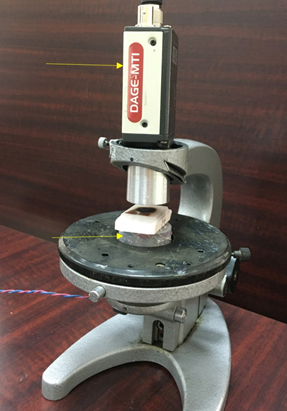
სურათი 1. ექსპერიმენტის დანადგარი. საკვლრვი ქსოვილი პერტის თეფშზეა. ქვემოდან არის ინფრაწითელი დიოდები, ზემოდან CCD კამერა
4. პროსტატის ქსოვილის კვლევის მეთოდოლოგია
4.1 ჰისტომორფოლოგიური რეფერენსი
ინფრაწითელ კვლევამდე პროსტატის თითოეული ნიმუში ექვემდებარება ჰისტომორფოლოგიურ ანალიზს. დგინდება:
ეს მონაცემები გამოიყენება ინფრაწითელი გამოსახულებების კალიბრაციისა და ვალიდაციისათვის.
4.2 ინფრაწითელი გამოსახულების მიღება
ჰისტოლოგიურად შეფასებული პროსტატის ფენა მოთავსდება ინფრაწითელი დანადგარზე და მიიღება მისი 2D ტრანსილუმინაციური გამოსახულება. გამოსახულებაზე მონიშნულია როგორც სიმსივნური, ასევე ჯანმრთელი ქსოვილის შესაბამისი არეები, რომელთა აგრესიულობის ხარისხი წინასწარ ცნობილია.
4.3 ციფრული დამუშავება და რაოდენობრივი ანალიზი
შემუშავებული პროგრამული უზრუნველყოფა ინფრაწითელი გამოსახულების თითოეულ პიქსელს ანიჭებს რიცხვით მნიშვნელობას 0-დან 255-მდე, განათებულობის ინტენსივობის მიხედვით (0 – სრულად შავი, 255 – მაქსიმალურად განათებული წერტილი). პროგრამა:
5. სტატისტიკური მოდელირება და პროგრამის „სწავლება“ (პროსტატა)
სტატისტიკურად სანდო კორელაციის დასადგენად თითოეული გლისონის ქულათა ჯამისათვის (6-დან 10-მდე) ტარდება არანაკლებ 20–25 დამოუკიდებელი ექსპერიმენტი. შესაბამისად, საერთო ნიმუშების რაოდენობა შეადგენს დაახლოებით 100–125 პროსტატას.
მიღებული მონაცემების საფუძველზე პროგრამა თითოეული აგრესიულობის ხარისხისათვის აგებს 95%-იან ნდობის ინტერვალს განათებულობათა ფარდობისთვის. აღნიშნული პროცესი წარმოადგენს პროგრამის „სწავლებას“, რის შემდეგაც შესაძლებელი ხდება უცნობი პროსტატის ნიმუშის აგრესიულობის შეფასება ინფრაწითელი გამოსახულების საფუძველზე 95%-იანი ალბათობით.
6. თირკმლის ქსოვილის კვლევის მეთოდოლოგია
6.1 ექსპერიმენტული მიდგომა
თირკმლის კიბოს კვლევა ტარდება იმავე ინფრაწითელ დანადგარზე, რაც პროსტატის შემთხვევაში. წინასწარი მონაცემები მიუთითებს, რომ თირკმლის კიბოვანი ქსოვილიც ხასიათდება მნიშვნელოვნად უფრო მაღალი ოპტიკური სიმკვრივით ჯანმრთელ ქსოვილთან შედარებით, რაც ინფრაწითელ გამოსახულებაზე გამოიხატება მუქი უბნების სახით.
6.2 გამოსხივების წყაროები
თირკმლის ნიმუშების შედარებით დიდი სისქის გამო გამოიყენება:
ტალღის სიგრძე და გამოსხივების ინტენსივობა რეგულირდება ისე, რომ ყველა ნიმუში გამოკვლეულ იქნას ერთნაირ საექსპერიმენტო პირობებში.
7. პროგრამული ანალიზი თირკმლის კიბოს საზღვრების დასადგენად
თირკმლის ნიმუშები თავდაპირველად ექვემდებარება ჰისტომორფოლოგიურ გამოკვლევას, რის საფუძველზეც დგინდება სიმსივნური და ჯანმრთელი უბნების საზღვრები. შემდგომ ამავე ნიმუშებზე მიიღება ინფრაწითელი გამოსახულებები.
პროგრამა:
არანაკლებ 20–25 თირკმლის ნიმუშის ანალიზის შემდეგ იგება 95%-იანი ნდობის ინტერვალი, რომელიც გამოიყენება პროგრამის „სწავლებაში“.
უცნობი ნიმუშის შემთხვევაში, თუ მიღებული ინტენსივობათა ფარდობა მოხვდება აღნიშნულ ნდობის ინტერვალში, 95%-იანი ალბათობით კეთდება დასკვნა, რომ სიმსივნური ქსოვილი სრულად დისკრიმინირებულია ქირურგიული ჩარევის შედეგად. წინააღმდეგ შემთხვევაში, დასკვნა მიუთითებს პოტენციურ რეზიდუალურ სიმსივნურ ქსოვილზე.
ჰისტო-მორფოლოგიური კვლევებისათვის ხდება პროსტატის დაშავენა ფრომალინში, რის შემდეგაც პროსტატა იჭრება სტანდარტული დადგენილი მეთოდით და ამ ნაჭრებიდა მზადდება ფორმალიბში დამუშავენული პარაფინით გაჟღენთილი მციე ზომის კონტეინერები. თითეული კონტეინერი გადაინომრება, და აქედან გამომდინარე წინასწარ ცნობილიათუ რომელი ნომერი კონტეინერი, და მაშასადამ მასში მოთვსებულიპროსტატის ქსოვილი მთლიანი პროსტატის რომელი რეგიონიდან იქნა მიღებული. ვუჭოდოთ ამ ობიექტს FFPE, ინგლისური აბრავიატურიდან. თითეული FFPE წარმოადგენს ბაზისს, საიდანაც ხდება 5-6 მიკრონის სისქის ანათლების აღება მიკროსკოპიოლი შესწავლისათვის, რათა დადგინედ ჰისტო-პათოლოგიური მდგომარეობა. ესნ ანათლები ჩტადარტული მეთოდით დაიტანება მინის სასაგნე მინაზე. ვიწოდთ ამ ობოიექტს SMG. აშკარაა, რომ FFPE და SMG-ზე ჯიბოვანი ქსოვილის ქარგა იდენტურია.
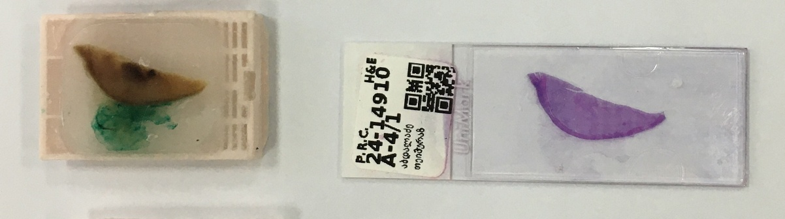
სურათი 2. მარცხნივ არის ერთერთი FFPE, ხოლო მარჯვნივ მისგან მიღებული GSM.
წინამდებარე კვლევის ფარგლებში მიღებული შედეგები ადასტურებს, რომ ინფრაწითელი ვიზუალიზაცია წარმოადგენს ეფექტურ, არაინვაზიურ და ინფორმატიულ მეთოდს ბიოლოგიური ქსოვილების ბიოფიზიკური ჰეტეროგენობის გამოსავლენად. ჩატარებულმა ექსპერიმენტებმა ცხადყო, რომ სიმსივნური და ჯანმრთელი ქსოვილები ინფრაწითელ გამოსახულებებში განსხვავდებიან როგორც ხარისხობრივი, ისე რაოდენობრივი მახასიათებლებით, რაც დაკავშირებულია მათი ოპტიკური, სტრუქტურული და მეტაბოლური თავისებურებების განსხვავებასთან.
პროსტატის კიბოს შემთხვევაში, კვლევამ აჩვენა, რომ ინფრაწითელ გამოსახულებებში სიმსივნური უბნები წარმოდგენილია უფრო მუქი და სივრცულად არათანაბარი სიგნალით, მაშინ როდესაც ჯანმრთელი ქსოვილი ხასიათდება შედარებით ჰომოგენური და ნათელი ინფრაწითელი პროფილით. განსაკუთრებით მნიშვნელოვანია ის ფაქტი, რომ აგრესიულობის ხარისხის მატებასთან ერთად შეინიშნება ინფრაწითელი სიგნალის ინტენსივობის თანმიმდევრული შემცირება, რაც მიუთითებს მეთოდის პოტენციალზე არა მხოლოდ სიმსივნური უბნების გამოვლენისთვის, არამედ მათი აგრესიულობის დიფერენცირებისთვისაც. აღნიშნული დაკვირვება შეესაბამება ჰისტომორფოლოგიურ მონაცემებს და ადასტურებს, რომ ინფრაწითელი ვიზუალიზაცია ასახავს სიმსივნის ბიოლოგიურ თვისებებს და არა მხოლოდ მორფოლოგიურ განსხვავებებს.
კვლევის ერთ-ერთ მნიშვნელოვან შედეგს წარმოადგენს ის გარემოება, რომ ინფრაწითელი ვიზუალიზაციის გამოყენებით შესაძლებელი გახდა პოსტოპერაციულად ამოღებული პროსტატის მთლიანი ქსოვილის ერთიანი შეფასება. ეს მიდგომა არსებითად განსხვავდება არსებული ჰისტომორფოლოგიური პრაქტიკისგან, რომელიც ეფუძნება მხოლოდ ნაწილობრივ შერჩევას და, შესაბამისად, შეიცავს მაღალი აგრესიულობის მქონე უბნების გამორჩენის რისკს. მიღებული შედეგები მიუთითებს, რომ ინფრაწითელი მეთოდი შეიძლება გამოყენებულ იქნეს როგორც წინასწარი „სკრინინგული“ ინსტრუმენტი, რომელიც ჰისტომორფოლოგიურ კვლევას გახდის უფრო მიზანმიმართულს და ეფექტურს.
თირკმლის კიბოს კვლევის მიმართულებით მიღებულმა შედეგებმა ასევე წარმოაჩინა ინფრაწითელი ვიზუალიზაციის პოტენციალი. ნაწილობრივი ნეფრექტომიის კონტექსტში, სადაც გადამწყვეტი მნიშვნელობა ენიჭება სიმსივნის ნეგატიური საზღვრების ზუსტ შეფასებას, ინფრაწითელი გამოსახულებები იძლევა შესაძლებლობას სწრაფად და არაინვაზიურად გამოვლინდეს პოტენციურად პრობლემური უბნები ნეფრექტომიის სარეცელში. ეს განსაკუთრებით მნიშვნელოვანია ინტრაოპერაციული გადაწყვეტილებების მიღებისას, როდესაც დროის ფაქტორი კრიტიკულია თირკმლის ფუნქციის შენარჩუნებისთვის.
კვლევის შედეგების განხილვისას მნიშვნელოვანია აღინიშნოს, რომ ინფრაწითელი ვიზუალიზაციის უპირატესობა არ შემოიფარგლება მხოლოდ სიზუსტით. მეთოდი ტექნიკურად შედარებით მარტივია, არ საჭიროებს რთულ და ძვირადღირებულ ინფრასტრუქტურას და არ მოითხოვს მაღალსპეციალიზებულ კადრებს, რაც მას განსაკუთრებით მიმზიდველს ხდის ისეთი ქვეყნების კლინიკური გარემოსთვის, სადაც მაღალტექნოლოგიური მეთოდების ფართო დანერგვა შეზღუდულია. ამ თვალსაზრისით, შემოთავაზებული მიდგომა შეიძლება ჩაითვალოს რეალისტურ ალტერნატივად როგორც ჰისტომორფოლოგიური კომპიუტერული ანალიზის რთული სისტემებისთვის, ისე მაღალი ველის მაგნიტურ-რეზონანსული მეთოდებისთვის.
ამასთანავე, კვლევამ გამოავლინა გარკვეული შეზღუდვები, რომლებიც აუცილებლად უნდა იქნას გათვალისწინებული შედეგების ინტერპრეტაციისას. ექსპერიმენტები განხორციელდა ექს vivo პირობებში, რაც ზღუდავს შედეგების უშუალო გენერალიზაციას კლინიკურ პრაქტიკაზე. მიუხედავად ამისა, მიღებული მონაცემები წარმოადგენს მნიშვნელოვან საფუძველს შემდგომი in vivo და კლინიკური კვლევებისთვის. დამატებით, ინფრაწითელი სიგნალის ინტენსივობაზე შესაძლოა გავლენას ახდენდეს ისეთი ფაქტორები, როგორიცაა ქსოვილის სისქე, ფიქსაციის მეთოდი და ოპტიკური ჰეტეროგენობა, რაც საჭიროებს მეთოდის შემდგომ სტანდარტიზაციას.
საერთო ჯამში, კვლევის შედეგები აჩვენებს, რომ ინფრაწითელი ვიზუალიზაცია წარმოადგენს პერსპექტიულ დამატებით ინსტრუმენტს პროსტატის და თირკმლის კიბოს პოსტოპერაციული შეფასებისთვის. მეთოდი არ არის განკუთვნილი ტრადიციული ჰისტომორფოლოგიური კვლევის ჩანაცვლებისთვის, თუმცა მისი ინტეგრაცია არსებულ დიაგნოსტიკურ ალგორითმებში შეიძლება მნიშვნელოვნად გააუმჯობესოს დიაგნოზის სიზუსტე, შეამციროს რეციდივის რისკი და ხელი შეუწყოს უფრო ინფორმირებული და უსაფრთხო კლინიკური გადაწყვეტილებების მიღებას.
1. ინფრაწითელი ვიზუალიზაციის შედეგები პროსტატის კიბოს შემთხვევაში
პროსტატის კიბოს კვლევის ფარგლებში ინფრაწითელი ვიზუალიზაცია ჩატარდა ფორმალინში ფიქსირებულ და პარაფინში ჩასმულ (FFPE) პროსტატის ქსოვილებზე, რომლებიც მიღებული იყო რადიკალური პროსტატექტომიის შემდეგ. ექსპერიმენტულმა შედეგებმა აჩვენა, რომ ინფრაწითელი გამოსახულება მკაფიოდ ასახავს ქსოვილის ჰეტეროგენობას და იძლევა სიმსივნური და ჯანმრთელი უბნების ვიზუალურ დიფერენცირებას.
ინფრაწითელ გამოსახულებებში სიმსივნური უბნები წარმოდგენილი იყო შედარებით მუქი რეგიონების სახით, მაშინ როდესაც ჯანმრთელი ქსოვილი ხასიათდებოდა უფრო ნათელი და ჰომოგენური განათებით
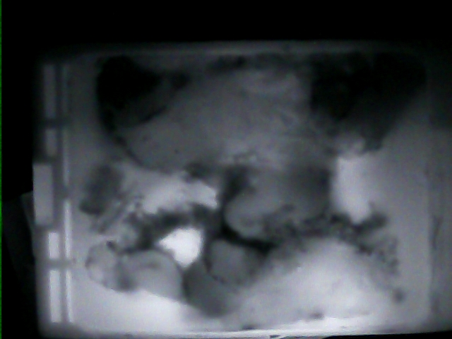
სურ. 3 მარცხნივ არაკიბოვანი ქსოვილი ინფრაწითელი გaმოსახულება მიღებული FFPE-დან . მარჯვნივ კიბოვანი ქსოვილის ინფრაწითელი გამოსახულება სხვა FFPE-დან.
აღნიშნული ვიზუალური განსხვავებები დაფიქსირდა ყველა გამოკვლეულ ნიმუშში და არ იყო დამოკიდებული შემთხვევით ფაქტორებზე.
ინფრაწითელი მონაცემების რაოდენობრივი ანალიზისთვის გამოყენებულ იქნა საშუალო განათების შეფარდების (RAI) მაჩვენებელი, რომელიც გამოითვლებოდა სიმსივნურ და ჯანმრთელ უბნებს შორის. მიღებულმა შედეგებმა აჩვენა, რომ სხვადასხვა აგრესიულობის მქონე პროსტატის კიბოსთვის RAI მნიშვნელობები მკაფიოდ განსხვავდება და მათი ინტერვალები ერთმანეთთან არ იკვეთება (Table 1).
კერძოდ, დაბალი აგრესიულობის კიბოსთვის დაფიქსირდა მაღალი RAI მნიშვნელობები, შუალედური აგრესიულობისთვის — საშუალო დიაპაზონი, ხოლო მაღალი აგრესიულობის კიბოსთვის — ყველაზე დაბალი RAI მნიშვნელობები. ბენიგნურ საკონტროლო ნიმუშებში RAI მნიშვნელობები მნიშვნელოვნად აღემატებოდა ყველა სიმსივნურ ჯგუფს.
ინფრაწითელი გამოსახულებების ჰისტომორფოლოგიურ მონაცემებთან შედარებამ აჩვენა სრული შესაბამისობა. ინფრაწითელ გამოსახულებებზე მუქი უბნები ემთხვეოდა ჰისტოლოგიურად დადასტურებულ კიბოვან არეებს, ხოლო ნათელი უბნები — ჯანმრთელ ქსოვილს .
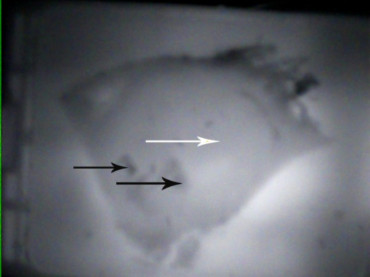
სურ 4 დაბალი აგრესიული PCa ნიმუშის ინფრაწიტელი გამოსხულება . მუქი ადგილები (შავი ისრები) მიუთითებს სიმსივნეზე; ნათელი არე (თეთრი ისარი) მიუთითებს ჯანმრთელ ქსოვილზე
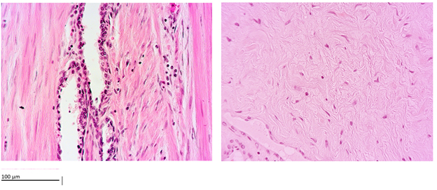
სურ. 5 . მარცხნივ: სიმსივნის არეალის ჰისტოლოგია (შეესაბამება სურ 4-ს- შავი ისარს). მარჯვნივ: ჯანსაღი არეალის ჰისტოლოგია (თეთრი ისარი). ×400. კალიბრი 100 µm
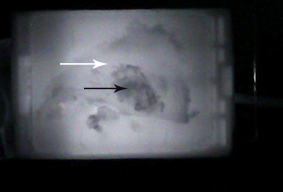
სურ.6 შუალედური აგრესიულობის მქონე ნიმუშის ინფრაწითელი გამოსახულება. მუქი არე (შავი ისარი) არის სიმსივნე; ნათელი არე (თეთრი ისარი) ჯანმრთელი ქსოვილია.
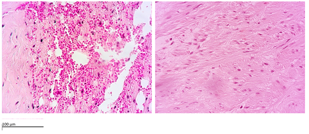
სურ. 7 მარცხნივ: შუალედური აგრესიული სიმსივნის ჰისტოლოგია (შავი ისარი, ნახ. 6). უფლება: ჯანსაღი ქსოვილის (ისრით). ×400. კალიბრი 100 µm
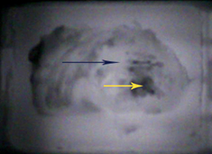
სურ. 8 უაღრესად აგრესიული კიბოს ინფრაწითელი გამოსახულება. ცენტრალური მუქი არე (ყვითელი ისარი) არის სიმსივნე; პერიფერიული არე (შავი ისარი) ჯანმრთელი ქსოვილია.
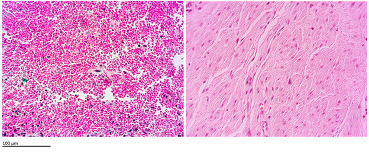
სურ, 9 მარცხნივ: მაღალი აგრესსი მქონესიმსივნის ჰისტოლოგია (შავი ისარი, ნახ. 8). მარჯვნივ: ჯანსაღი ქსოვილი (თეთრი ისარი). ×400. კალიბრი 100 µm
აგრესიულობის ზრდასთან ერთად ინფრაწითელი სიგნალის ინტენსივობის შემცირება იყო თანმიმდევრული და რეპროდუცირებადი.
მეთოდის რეპროდუქცირებადობა შეფასდა განმეორებითი გაზომვებით და მიღებულ იქნა მაღალი შიდა კლასის კორელაციის კოეფიციენტი (ICC ≈ 0.92), რაც მიუთითებს ინფრაწითელი მეთოდის მაღალი სანდოობის შესახებ. აგრესიულობის მაღალი ხარისხის კიბოს გამოვლენისას მეთოდმა აჩვენა მაღალი დიაგნოსტიკური ეფექტიანობა — მაღალი მგრძნობელობა და სპეციფიკურობა, რაც ხაზს უსვამს მის პოტენციალს, როგორც ობიექტურ რაოდენობრივ ინსტრუმენტს პროსტატის კიბოს აგრესიულობის შეფასებისთვის
FFPE da SMG ზე მიღებულიშედეგები გადამოწმდა მთლიან პროსტატაზე. 10-ე სურათზე მარცხნივ ნაჩვენებია იზოლირებული პროსტატის IR გამოსხულება. ჩვენი პროგრამის საშუალეით დადგინდა კიბოვანი არის შესაბამისი განათებულონის საშუალო მნიშვნელობის ფარდობა ჯანმრთელ არის შესაბამისი განათებულონის საშუალო მნიშვნელობის მნიშვნელობსთან (ვუწდით კ/ჯ) , რომელის 4.5 ტოლია, რაც მიუთითებს მაღლი აფრესიულობის ხარისხზე. პროსტის ფორმალინში დამუშავებისა და ცნობილ მთოდით დაჭრის შემდეგ მიღებული იყო FFPE-ბი, (აბრავიატურა მოდის -formalin fixed parahyne embaded-დან).
კერძოდ, სურათ 9-ე სურათზე მარჯვნივ B ნაჩვენებია ამავე უბნიდან აღებული ერთ-ერთი FFPE-ს ინფრაწითელი გამოსახულება, რომლის ჩვენს მიერ შექმნილ პროგრამაში დამუშავებამ ფარდობის იგივე შედეგ მოგვცა 4.5
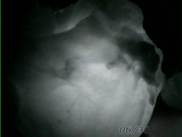 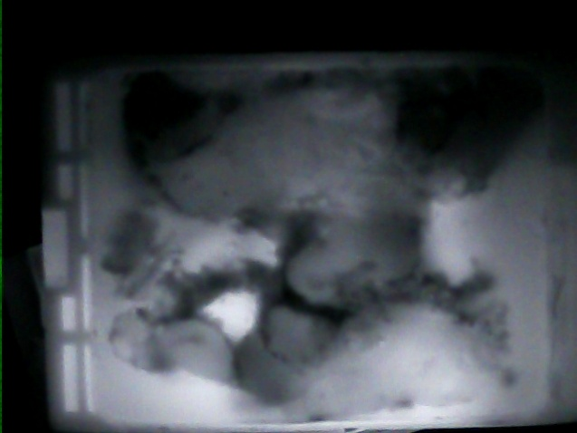
სურათი 10. არცხნივ მთლიანი პროსტატის ინფრაწითელი. გამოსახულება. მარჯვნივ ამავე პროსტატის კიბოვანი არედან აღებული FFPE-ს ინფრაწითელი გამოსახულება.
სურათზე 11 ნაჩვენებია მოცემული FFPE-შესაბამისი SMG-დან აღბული კიბოს უჯრედების მიკრო ფოტოგრაფიები
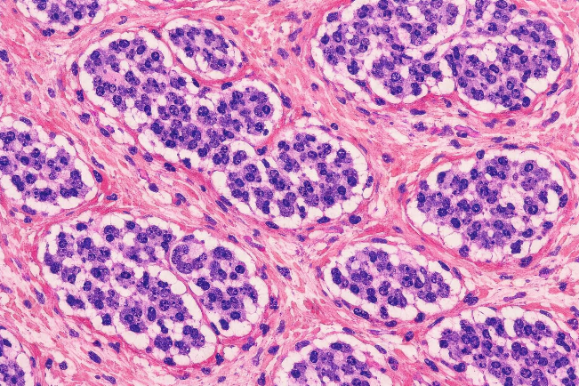 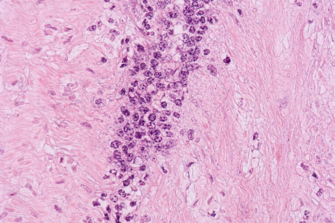
სურათი 11. მარცხნივ- კიბოს უჯრედები. მარჯვნივ არაკიბოვანი ქსოვილის უჯრედები.
იგივე დამოკიდებულება არის გამოვლენილი სხვა აგესიულობის მქონე სიმსივნებისათვისაც. კეროდ 12-ე სურათზე ილუსტრირებულია დაბალი აგრესიულობის შემთხვევა.
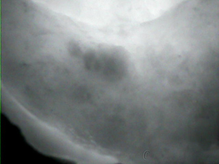 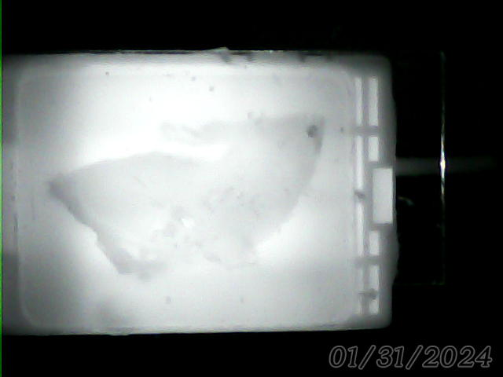
სურ. 12 მარცხნივ მთლიანი პროსტატის ინფრაწითელი გამოსახულება. (დაბალი აგრედიულობის ხრისხი-2),მარჯვნივ იგივე პროსტასტის ერთერთი FFPE –ს ინფრაწითელი გამოსახულება.
13 სურაძე ნაჩვენებია დაბალი აგრესიულობის პროსტატის კიბოვანოი და ჯანმრღთელი ქსოვილენის უჯრედების მოკრო ფოტოები.
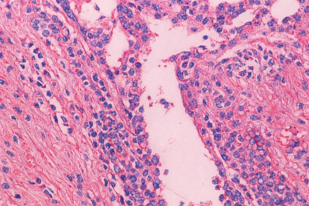 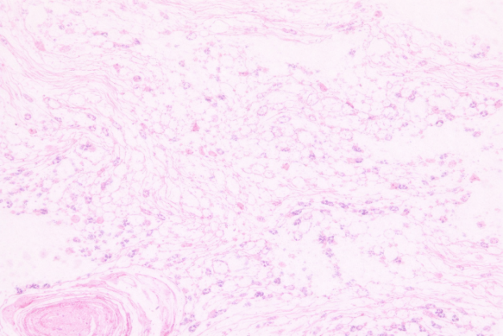
სურ .13. მარცხნივ დაბალი აგრსიულობის ხარისხის მქონე კიბოვანი ქსოვილის უჯრედების მიკროფოტო. მარჯვნივ, ამავე პოსტატის ჯანმრთელი უჯრედების მიკროფოტო.
.
ინფრაწეითელი ვიზუალიზაციის შედეგები თირკმელის კიბოს შემთხვევაში
თირკმლის კიბოს კვლევის ფარგლებში ინფრაწითელი ვიზუალიზაცია ჩატარდა იზოლირებულ თირკმლის ნიმუშებზე, რომლებიც მიღებული იყო ნაწილობრივი ან რადიკალური ნეფრექტომიის შემდეგ. მიღებულმა შედეგებმა აჩვენა, რომ ინფრაწითელი გამოსახულება საშუალებას იძლევა მკაფიოდ განვასხვაოთ სიმსივნური და ჯანმრთელი თირკმლის ქსოვილი.
ჯანმრთელი თირკმლის ქსოვილი ინფრაწითელ გამოსახულებებში ხასიათდებოდა ერთგვაროვანი და სტაბილური განათებით, რაც მიუთითებს მის ოპტიკურ ჰომოგენობაზე
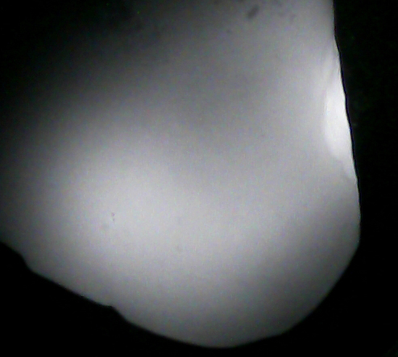
სურ. 14. ჯანმრთელი თირკმელის ინფრაწითელი გამოსახულება.
ამის საპირისპიროდ, სიმსივნური უბნები წარმოდგენილი იყო მაღალი ოპტიკური სიმკვრივის მქონე, მუქი რეგიონების სახით.
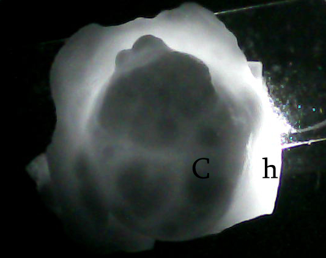
სურ. 15 ოპერაციის შედეგად მიღებული (ამოჭრილი) კიბოვანი თირკმლის ქსოვილის ინფრაწითელი გამოსახულება. h შეესაბამება ჯანმრთელ არეს, G- შესაბამება კიბოვნ ქსოვილს.
აღნიშნული განსხვავებები მკაფიოდ ჩანდა როგორც მცირე ზომის, ისე შედარებით დიდი სიმსივნური წარმონაქმნების შემთხვევაში.
ინფრაწითელი გამოსახულებების რაოდენობრივმა ანალიზმა აჩვენა, რომ სიმსივნური ქსოვილის საშუალო განათების ინტენსივობა მნიშვნელოვნად დაბალია ჯანმრთელ ქსოვილთან შედარებით. საშუალო განათების შეფარდების (RAI) მნიშვნელობები განაწილებული იყო ვიწრო ინტერვალში და უზრუნველყოფდა სიმსივნური და არაევსივნური ქსოვილების დიფერენცირებას მაღალი ალბათობით.
ინფრაწითელი ვიზუალიზაციის შედეგები გადამოწმდა ჰისტომორფოლოგიური კვლევით. ინფრაწითელ გამოსახულებებზე სიმსივნურად იდენტიფიცირებული უბნები სრულად ემთხვეოდა ჰისტოლოგიურად დადასტურებულ ავთვისებიან არეებს, ხოლო ნათელი რეგიონები — ჯანმრთელ ქსოვილს
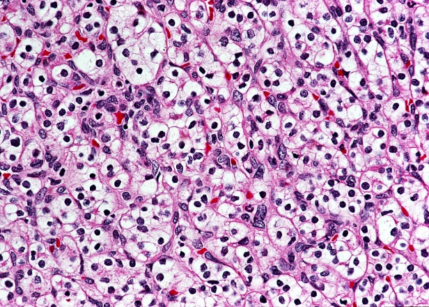 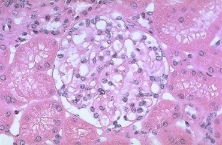
სურათი 16. მარცხნივ თირკმლის კიბოვანი ქსოვილის უჯრედების მიკრო ფოტო, მარჯვნივ, ამავე თირკმლის ჯანმრთელი ნაწილის უჯრედების მიკროფოტო.
აღსანიშნავია, რომ ინფრაწითელი კვლევის ჩატარებას სჭიროებდა მხოლოდ რამდენიმე წუთი თითო ნიმუშზე, რაც მნიშვნელოვნად მოკლეა ინტრაოპერაციულ გაყინვის მეთოდით მიღებული ანათლების შესწავლის დროსთან (FS) შედარებით. ეს გარემოება განსაკუთრებით მნიშვნელოვანია ნაწილობრივი ნეფრექტომიის დროს, როდესაც ოპერაციის ხანგრძლივობა და „თბილი იშემიის“ დრო კრიტიკულად შეზღუდულია.
მიღებულმა შედეგებმა აჩვენა, რომ ინფრაწითელი ვიზუალიზაცია შეიძლება გამოყენებულ იქნეს როგორც სწრაფი, არაინვაზიური და ეფექტური მეთოდი თირკმლის კიბოს შემთხვევაში სიმსივნური საზღვრების წინასწარი შეფასებისთვის და პოსტოპერაციული ჰისტომორფოლოგიური კვლევის მიზანმიმართულად წარმართვისთვის
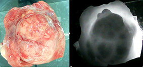
სურათი 17. მარცხვნივ- თირკმლის კიბოვანი ქსოვილი და მისი მიმდბარე ჯანმრთელ ქსოვილი. მარჯვნივ- ამავე ქსოვილის ინფრაწითელი გამოსახულება.
18-ე სურათზე ნაჩვენები თირკმლის კივბოვანი და ჯანმრთელი ქსოვილების უჯრედების მიკრო ფოტოები.
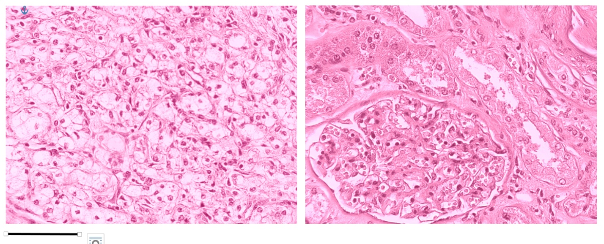
სურათი 18. მარცხნივ კიბოვანი თირკვლის უჯრედების მიკრო ფოტოგრაფია. მარჯვნივ- ჯანმრთელი ქსოვილის უჯრედების მიკრო-ფოტო.
სხვადახხვა აგრესიულობით ხასიათება ასევე თირკმელის კიბოს უჯრედები.
ამ კვლევაში ჩვენ გავაანალიზეთ თირკმლის ქსოვილისა და თირკმლის უჯრედის კარცინომის ხუთი ძირითადი ჰისტოპათოლოგიური კატეგორია (rcc), რაც საშუალებას იძლევა მათი მიკროსკოპული მორფოლოგიის პირდაპირი შედარება ინფრაწითელი (IR) გადაცემის შესაბამის მახასიათებლებთან. სურათი 4 წარმოადგენს წარმომადგენლობით ჰემატოქსილინ–ეოზინის (H&E) შეღებილ სექციებს, რომლებიც განლაგებულია მინიმუმიდან ყველაზე აგრესიულ მორფოლოგიამდე, რომელსაც თან ახლავს მათი შესაბამისი IR სურათები, რომლებიც მიღებულია ffpe ნიმუშებიდან.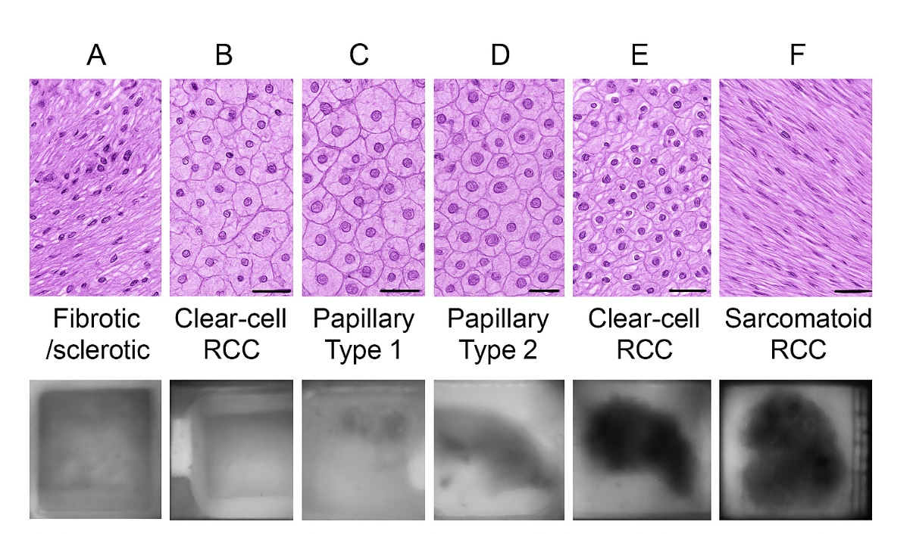
სურათი 4. წარმომადგენლობითი ჰისტოპათოლოგია და შესაბამისი ინფრაწითელი (IR) გადაცემის გამოსახულებები თირკმლის ქსოვილისა და თირკმლის უჯრედოვანი კარცინომის (RCC) ქვეტიპები, რომლებიც მოწყობილია აგრესიულობის გაზრდით. ზედა რიგი: ჰემატოქსილინ–ეოზინით შეღებილი სექციები, რომლებიც აჩვენებს (a) ფიბროზულ/სკლეროზულ ქსოვილს, (B) დაბალი ხარისხის გამჭვირვალე უჯრედის rcc, (C) პაპილარული rcc ტიპი 1, (D) პაპილარული rcc ტიპი 2, (E) უფრო მაღალი ხარისხის გამჭვირვალე უჯრედის rcc და (F) სარკომატოიდური rcc. პანელები ასახავს პროგრესულ არქიტექტურულ დეზორგანიზაციას, ბირთვულ ატიპიას და მეზენქიმურ დედიფერენცირებას ავთვისებიანი სიმსივნის სპექტრში. ქვედა რიგი: Ffpe ნიმუშებიდან მიღებული Ir გადაცემის სურათების შესატყვისი. უჯრედული ჰეტეროგენობის და ოპტიკური სიმკვრივის გაზრდა იწვევს A-დან F-მდე პანელების უფრო მუქ IR გამოჩენას.ყველაზე ბნელი რეგიონები შეესაბამება ძალიან აგრესიულ და სტრუქტურულად რთულ სიმსივნურ ზონებს. IR სურათები რაოდენობრივად იქნა განსაზღვრული ჩვენი მორგებული პროგრამული უზრუნველყოფის გამოყენებით, შედარებითი შესუსტების ინდექსის (RAI) გამოსათვლელად. თითოეული ჯგუფისთვის მიღებული იყო 95%–იანი ნდობის ინტერვალების არ გადახურვა: 6.7-7.
ჰისტოპათოლოგიური დახასიათება პანელი a აჩვენებს ფიბროზულ / სკლეროზულ თირკმლის ქსოვილს, რომელიც შედგება მჭიდროდ შეფუთული კოლაგენის ბუნდულებისგან, იშვიათი, წაგრძელებული ფიბრობლასტების მსგავსი ბირთვებით. უჯრედოვანი, კომპაქტური მატრიცა ასახავს პოსტ-ტუმორალურ ან იშემიურ რემოდელირებას და არა ნეოპლასტიკურ პროლიფერაციას. პანელი B ასახავს დაბალი ხარისხის გამჭვირვალე უჯრედის rcc-ს, რომელიც ხასიათდება პოლიგონალური უჯრედებით, რომლებიც შეიცავს ოპტიკურად გამჭვირვალე ციტოპლაზმას გლიკოგენისა და ლიპიდების შემცველობის გამო. უჯრედები გამოხატავენ მრგვალ, ცენტრალურად მდებარე ბირთვებს და გამოყოფილია დელიკატური სისხლძარღვოვანი სეპტებით, რაც შეესაბამება ინდოლენტურ სიმსივნურ ბიოლოგიას. C პანელზე ნაჩვენებია პაპილარული rcc ტიპი 1, რომელიც შედგება კუბოიდურიდან სვეტამდე ეპითელური უჯრედებისგან, რომლებიც ქმნიან პაპილარულ სტრუქტურებს ფიბროვასკულური ბირთვების გარშემო. ზომიერი ბირთვული ატიპია და გაზრდილი ციტოპლაზმური სიმკვრივე ასახავს შუალედურ ავთვისებიან პოტენციალს. D პანელზე გამოსახულია პაპილარული rcc ტიპი 2, რომელიც აჩვენებს გაფართოებულ უჯრედებს უფრო გამოკვეთილი ნუკლეოლით, უფრო მაღალი ბირთვული სტრატიფიკაციით და გაზრდილი არქიტექტურული სირთულის რელატივით.
წინამდებარე პროექტის ფარგლებში მიღებული შედეგების საფუძველზე რეკომენდებულია ინფრაწითელი ვიზუალიზაციის მეთოდის შემდგომი განვითარება და გაფართოება როგორც კვლევით, ისე გამოყენებით მიმართულებებში. პირველ ეტაპზე მიზანშეწონილია მეთოდის ვალიდაცია უფრო ფართო ნიმუშთა რაოდენობაზე და მრავალცენტრულ გარემოში, რაც გაზრდის მიღებული შედეგების გენერალიზაციის შესაძლებლობას და გააძლიერებს მეთოდის სტატისტიკურ სანდოობას.
რეკომენდებულია ინფრაწითელი ვიზუალიზაციის გამოყენების გაფართოება in vivo კვლევებზე, რაც საშუალებას მისცემს შეფასდეს მეთოდის ეფექტიანობა რეალურ კლინიკურ პირობებში და შეისწავლოს მისი პოტენციალი ინტრაოპერაციული გადაწყვეტილებების მხარდასაჭერად. განსაკუთრებული ყურადღება უნდა დაეთმოს პროსტატის და თირკმლის ქირურგიული ჩარევების დროს მეთოდის ინტეგრაციის შესაძლებლობას არსებული სამუშაო პროცესში.
სამომავლოდ მიზანშეწონილია ინფრაწითელი გამოსახულებების ავტომატური ან ნახევრად ავტომატური ანალიზის ალგორითმების გაუმჯობესება, მათ შორის მანქანური სწავლების ელემენტების დანერგვა. ეს ხელს შეუწყობს სიმსივნური უბნების იდენტიფიკაციის პროცესის შემდგომ ობიექტივიზაციას და შეამცირებს ოპერატორზე დამოკიდებულ ფაქტორებს.
ასევე რეკომენდებულია მეთოდის ტექნიკური პარამეტრების დამატებითი სტანდარტიზაცია, მათ შორის გამოსხივების ტალღის სიგრძის, განათების ინტენსივობის და გამოსახულების დამუშავების პროტოკოლების ოპტიმიზაცია. აღნიშნული ნაბიჯები აუცილებელია მეთოდის რეპროდუქცირებადობისა და სხვადასხვა ლაბორატორიებს შორის შედეგების შედარებადობის უზრუნველსაყოფად.
პრაქტიკული თვალსაზრისით, მიზანშეწონილია ინფრაწითელი ვიზუალიზაციის დანერგვის პილოტური პროგრამების განხორციელება კლინიკურ დაწესებულებებში, განსაკუთრებით იმ ქვეყნებში და რეგიონებში, სადაც მაღალტექნოლოგიური დიაგნოსტიკური მეთოდები შეზღუდულად არის ხელმისაწვდომი. პარალელურად რეკომენდებულია სამედიცინო პერსონალის ტრენინგი და მეთოდის გამოყენებისათვის შესაბამისი სახელმძღვანელოების შემუშავება.
საერთო ჯამში, პროექტის შედეგები ქმნის მყარ საფუძველს ინფრაწითელი ვიზუალიზაციის მეთოდის შემდგომი კვლევის, ტექნოლოგიური განვითარების და ეტაპობრივი კლინიკური დანერგვისთვის, რაც პოტენციურად შეიძლება გადაიზარდოს ფართოდ გამოყენებად, ხელმისაწვდომ და ეფექტურ ინსტრუმენტად ონკოლოგიური ქირურგიისა და პოსტოპერაციული მენეჯმენტის მხარდასაჭერად.
Besarion Partsvania ,Tamaz Sulaberidze, Alexandre Khuskivadze, Sophio Abazadze
Prostate Cancer Diagnostics Modelling Using the Infrared Imaging Method. 2024.
Experimental Oncology Vol. 46 No. 3 (2024):
https://doi.org/10.15407/exp-oncology.2024.03.268
Besarion Partsvania ,Tamaz Sulaberidze, Alexandre Khuskivadze, Sophio Abazadze, Teimuraz Gogoladze
Utilising Infrard Imaging to Evaluate the Aggressiveness of Prostate Cancer. Experimental Oncology. Vol. 47. No 3. (2025). https://doi.org/10.15407/exp-oncology.2025.03.377
Besarion Partsvania ,Tamaz Sulaberidze, Alexandre Khuskivadze, Sophio Abazadze, Teimuraz Gogoladze, Nuca Khuskivadze. Differentiating Malignant and Healthy Areas in Isolated Kidney Samples through Infrared Visualization Technique. World Journal of Oncology. Vol. 16, No 3 (2025)
Khuskivadze Alexandre, Abazadze Sophio Partsvania Besarion , Sulaberidze Tamaz
Alternative optical techniques for assessing the aggressiveness of prostate cancer. Eurepean Urology Open Science. Vol. 77 Suppl. 1. S18. DOI:10.1016/S2666-1683(25)00167-3
Besarion Partsvania ,Tamaz Sulaberidze, Alexandre Khuskivadze, Sophio Abazadze
Identifying Cancerous and Non-Cancerous Areas in Isolated Kidney Samples via Infrared Visualization. Poster 2025. IKS EUROPE.
შენიშვნა: საბოლოო ანგარიშში ასახული მასალები დანართის სახით წარმოდგენილი უნდა იყოს ელექტრონული ან/და ნაბეჭდი სახით.
პროექტის სამეცნიერო ხელმძღვანელის ხელმოწერა წამყვანი ორგანიზაციის ხელმძღვანელის ხელმოწერა და ბეჭედი
––––––––––––––––––––––––––– –––––––––––––––––––––––––––
ბ.ა.
თარიღი: ––––––––––––